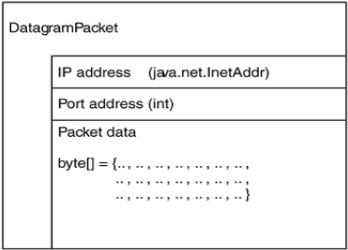
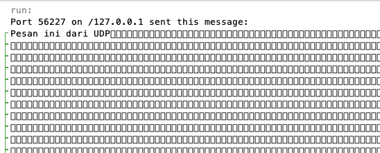

Awali setiap sebelum membuat projek dengan berdoa.
Baca dan pahami tujuan, dasar teori, dan latihan-latihan modul dengan baik.
Kerjakan tugas-tugas projek dengan baik, sabar dan jujur
Ulasan Teori
UDP Socket
User Datagram Protocol (UDP), adalah salah satu protokol lapisan transpor TCP/IP yang mendukung komunikasi yang tidak
andal (unreliable), tanpa koneksi (connectionless) antara host-host dalam jaringan yang menggunakan TCP/IP. UDP
memiliki karakteristik-karakteristik berikut:
Connectionless (tanpa koneksi): Pesan-pesan UDP akan dikirimkan tanpa harus dilakukan proses negosiasi koneksi antara
dua host yang hendak berukar informasi.
Unreliable (tidak andal): Pesan-pesan UDP akan dikirimkan sebagai datagram tanpa adanya nomor urut atau pesan
acknowledgment. Protokol lapisan aplikasi yang berjalan di atas UDP harus melakukan pemulihan terhadap pesan-pesan yang
hilang selama transmisi. Umumnya, protokol lapisan aplikasi yang berjalan di atas UDP mengimplementasikan layanan
keandalan mereka masing-masing, atau mengirim pesan secara periodik atau dengan menggunakan waktu yang telah didefinisikan.
UDP menyediakan mekanisme untuk mengirim pesan-pesan ke sebuah protokol lapisan aplikasi atau proses tertentu di
dalam sebuah host dalam jaringan yang menggunakan TCP/IP. Header UDP berisi field Source Process Identification dan
Destination Process Identification.
UDP menyediakan penghitungan checksum berukuran 16-bit terhadap keseluruhan pesan UDP.
Aplikasi-aplikasi yang menggunakan protokol UDP antara lain adalah:
DNS
Video Streaming
Voice over IP (VoIP)
Soket UDP bisa menerima data dari lebih dari satu mesin atau host.
UDP dalam Java
Java mendukung pemrograman komunikasi protokol UDP dengan menyediakan 2 kelas:
java.net.DatagramSocket
java.net.DatagramPacket
DatagramSocket
Kelas DatagramPacket mewakili paket data yang ingin ditransmisikan menggunakan protokol UDP. Kelas ini terdiri dari
array bertipe byte yang menjadi tempat data yang ingin dikirim, atau tempat data yang akan diterima. Kelas ini juga
memiliki alamat IP dan alamat port.

Datagram Packet
Fungsi dari objek DatagramPacket adalah :
Untuk mengirim data ke komputer lain menggunakan UDP
Untuk menerima data dari komputer lain menggunakan UDP
Konstruktor yang bisa kita gunakan bergantung dari alasan untuk apa objek DatagramPacket tersebut kita buat tadi. Untuk
mengirim datagram, maka konstruktornya adalah :
public DatagramPacket(byte[] data, int length, InetAddress remote, int port)
public DatagramPacket(byte[] data, int offset, int length, InetAddress remote, int port)
Contoh :
Sedangkan konstruktor untuk menerima datagram adalah :
public DatagramPacket(byte[] buffer, int length)
public DatagramPacket(byte[] buffer, int offset, int length)
Contoh :
DatagramPacket packet = new DatagramPacket(newbyte[256], 256);
Sedangkan method-method yang dimiliki class DatagramPacket antara lain :
InetAddress getAddress() — mengembalikan alamat IP asal datagram, atau IP tujuan datagam
byte[] getData() — mengembalikan isi dari DatagramPacket, yaitu array byte.
int getLength() — mengembalikan nilai panjangnya isi data yang ada pada DatagramPacket.
int getPort() — mengembalikan nomor port asal datagram, atau port tujuan datagam, tergantung jenis datagramnya
void setAddress(InetAddress addr) — mengeset alamat baru untuk DatagamPacket
void setData(byte[] buffer) — memberikan buffer data baru dalam bentuk array byte
void setLength(int length) — mengeset panjang dari DatagramPacket dengan nilai yang dimasukkan. Perlu diingat bahwa
panjangnya harus lebih kecil dari ukuran maksimum data buffer atau IllegalArgumentException akan terjadi.
void setPort(int port) — memberikan nilai port tujuan baru bagi DatagramPacket.
DatagramPaket
Kelas ini digunakan untuk mengirim dan menerima DatagramPacket dari atau ke jaringan.
Konstuktor :
DatagramSocket(int port)
digunakan untuk menyatakan penggunaan suatu nomor port sebagai "pintu" untuk menerima koneksi dari client. untuk
membuat server datagram socket
DatagramSocket(int port, InetAddress laddr) membentuk koneksi dengan protokol UDP pada alamat IP lokal tertentu dan pada nomor port tertentu.
DatagramSocket()
Kelas ini membentuk koneksi dengan protokol UDP pada alamat IP lokal host dengan penentuan nomor portnya secara random
berdasar tersedianya nomor port yang dapat digunakan. untuk membuat client datagram socket
Method-method :
void close() — menutup socket dan melepaskannya dari port lokal.
void connect(InetAddress remote_addr int remote_port) — membatasi akses menuju alamat tujuan dan port komputer tujuan
void disconnect() — memutuskan DatagramSocket.
InetAddress getInetAddress() — mengembalikan alamat komputer tujuan dimana socket terhubung, atau null apabila tidak
ada koneksi ke tujuan.
int getPort() — mengembalikan alamat port komputer tujuan jika socket terhubung, atau -1 apabila tidak ada koneksi
InetAddress getLocalAddress() — mengembalikan alamat lokal dimana soket terkoneksi
int getLocalPort() — mengembalikan nilai alamat port di mana soket terkoneksi
int getReceiveBufferSize() throws java.net.SocketException — mengembalikan nilai ukuran maksimum buffer untuk paket
UDP yang akan diterima
int getSendBufferSize() throws java.net.SocketException — mengembalikan nilai ukuran maksimum buffer untuk paket UDP
yang akan dikirim
int getSoTimeout() throws java.net.SocketException — mengembalikan nilai optional timeout soket. Nilai ini digunakan
untuk menentukan berapa milidetik suatu operasi pembacaan akan memblok sebelum mengeluarkan pesan error
java.io.InterruptedIOException. Secara default, nilai ini akan berisi 0, menandakan bahwa I/O yang terblok akan dapat digunakan..
void receive(DatagramPacket packet) throws java.io.IOException — membaca paket UDP dan menyimpan isi paket tersebut.
Atribut alamat dan port dari paket akan ditulis ulang dengan alamat pengirim dan port pengirim, dan atribut panjang
paket akan berisi panjang paket asli yang mana bisa lebih kecil dari ukuran array byte paket. Jika nilai atribut timeout
tidak ditentukan menggunakan metode DatagramSocket.setSoTimeout(int duration), method ini akan memblok seterusnya. Jika
sudah ditentukan, maka error java.io.InterruptedIOException akan dikeluarkan apabila waktu melebihi waktu timeout yang sudah ditentukan.
void send(DatagramPacket packet) throws java.io.IOException — mengirim paket UDP, yang dimasukkan sebagai parameter.
void setReceiveBufferSize(int length) throws java.net. SocketException — mengeset ukuran maksimum buffer yang
digunakan untuk UDP packet yang diterima.
void setSendBufferSize(int length) throws java.net.SocketException — mengeset ukuran maksimum buffer yang digunakan
untuk UDP packet yang dikirim.
void setSoTimeout(int duration) throws java.net.SocketException — mengeset nilai option timeout soket. Berupa jumlah
milidetik yang diperbolehkan untuk melakukan blok pada operasi pembacaan sebelum dinyatakan error java.io.InterruptedIOException.
Mengirim Data UDP
Langkah-langkah untuk mengirim datagram UDP ke sebuah server UDP :
Buatlah class dengan nama JavaSenderUDP.
Mengkonversi data yang mau dikirim ke dalam bentuk array byte
Memasukkan array byte tadi, panjang data dalam array, dan InetAddress serta nomor port tujuan ke dalam
DatagramPacket lewat konstruktornya
Buat DatagramSocket menggunakan konstruktornya (client DatagramSocket) , dan memanggil method send() dengan
memasukkan DatagramPacket yang telah dibuat.
Contoh script sebagai berikut:
InetAddress ia = InetAddress.getByName(“localhost”);
int Port = 2000;
String s = “Pesan ini dari UDP“;
byte[] b = s.getBytes();
DatagramPacket dp = new DatagramPacket(b, b.length, ia, Port);
DatagramSocket sender = new DatagramSocket();
sender.send(dp);
Jalankan program tersebut!
Menerima Data UDP
Langkah untuk menerima datagram UDP dari klien adalah :
Buatlah sebuah class dengan nama JavaRecieveUDP.
Buatlah sebuah DatagramPacket kosong (DatagramPacket untuk menerima data)
Buatlah objek DatagramSocket melalui konstruktornya (DatagramSocket untuk server)
Lalu panggil method receive() dari datagramSocket dengan memasukkan DatagramPacket kosong yang telah dibuat tadi
untuk menampung datagram yang datang.
Ambil datanya dalam bentuk array byte pada DatagramPacket yang telah terisi. Lalu konversikan ke bentuk data yang
diinginkan.
Contoh :
try {
byte buffer = newbyte[65536];
DatagramPacket incoming = new DatagramPacket(buffer,buffer.length);
DatagramSocket ds = new DatagramSocket(2134);
ds.receive(incoming);
byte[] data = incoming.getData();
String s = new String(data, 0, data.getLength());
System.out.println("Port " + incoming.getPort() + " on " + incoming.getAddress() + " sent this message:");
System.out.println(s);
}catch (IOException e) {
System.err.println(e);
}
Class yang handle tentang pengiriman data pada protocol UDP terdapat pada class DatagramPacket, pada class tersebut
data yang akan dikirimkan harus berupa byte array. Sementara kebutuhan kita berbagai tipe data yang harus dikirimkan
misalkan object dalam bentuk file, image, atau clas bentukan.
Hal yang perlu dilakukan adalah mengubah object yang akan dikirimkan ke dalam bentuk byte array, sedangkan ketika
menerima dalam bentuk byte array, harus diubah ke dalam bentuk object. Yang terakhir dilakukan adalah mengubah object
ke dalam class bentukan dengan casting.
Pertanyaan
Apakah output dari hasil potongan program di atas ketika dijalankan? Bandingkan dengan hasil di bawah ini

Output program
Mengapa bisa demikian, silakan hilangkan karakter aneh tersebut, sehingga ketika tampil hanya data yang dikirimkan oleh
server.
Silakan ubah baris perintah byte buffer = new byte[65536] sehingga ukuran arraynya lebih kecil, jalankan program
Anda dan sebenarnya fungsi perintah tersebut.
Program Server
Buatlah Project dengan nama Class ServerDatagram.java.
Tulislah perintah berikut
import java.net.*;
import java.io.*;
classServerDatagram{
publicstatic DatagramSocket ds;
publicstaticint clientport=800,serverport=900;
publicstaticvoidmain(String args[])throws Exception
{
byte buffer[]= newbyte[1024];
ds= new DatagramSocket (serverport);
BufferedReader dis= new BufferedReader ( new InputStreamReader (System.in));
System.out.println ("Server menunggu input");
InetAddress i=InetAddress.getByName ("Localhost");
while (true)
{
System.out.print("Inputan Server: ");
String str=dis.readLine();
if ((str==null || str.equals ("end")) )
break;
buffer=str.getBytes();
ds.send ( new DatagramPacket (buffer,str.length(), i, clientport));
}
}
}
Jalankan program tersebut!
Program Client
Buatlah Project dengan nama Class ClientDatagram.
Tuliskan perintah berikut:
classClientDatagram{
publicstatic DatagramSocket d;
publicstaticbyte buffer[] = newbyte [1024];
publicstaticint clientport=800,serverport =900;
publicstaticvoidmain(String args[])throws Exception
{
d= new DatagramSocket (clientport);
System.out.println ("Client sedang menunggu server mengirimkan data ");
System.out.println ("tekan Ctrl + C untuk mengakhiri ");
while (true)
{
DatagramPacket p = new DatagramPacket (buffer, buffer.length);
d.receive (p);
String ps= new String (p.getData(),0,p.getLength());
System.out.println("From Server: "+ ps);
}
}
}
Jalankan program tersebut!
Tugas
Modifikasi program di atas sehingga tidak hanya mengirimkan data text, tetapi juga bisa mengirimkan sebuah file.
Modifikasilah program diatas agar menjadi program yang dapat digunakan untuk saling mengirim pesan menggunakan 2 komputer.
Buatlah Program untuk meremote Cursor Mouse komputer lain menggunakan UDP!